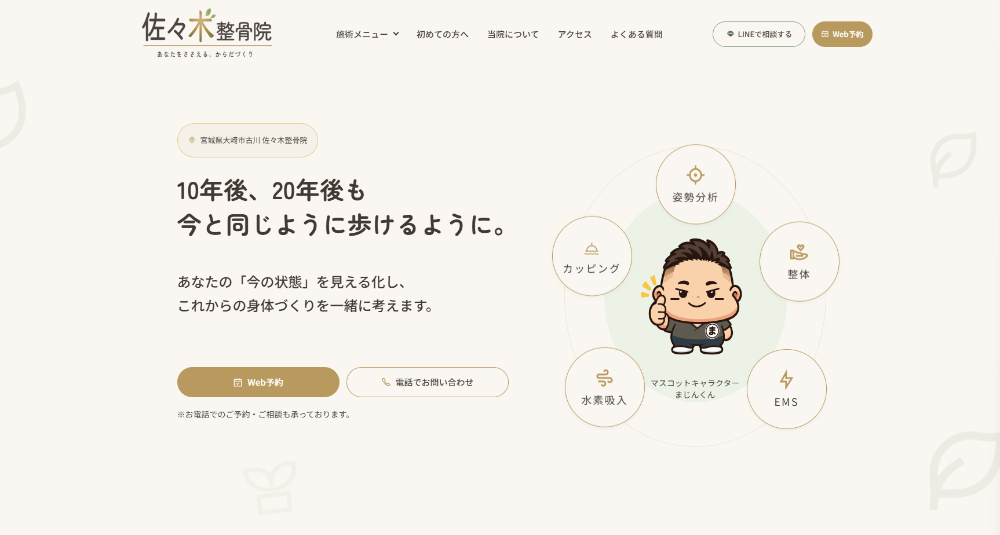

WORKS
佐々木整骨院
WEB DESIGN / 2026

ABOUT
身体づくりへの想いを、
Webサイトというかたちに。
宮城県大崎市の佐々木整骨院のホームページとランディングページを制作。院のコンセプトや施術内容を整理し、初めて訪れる方にも分かりやすい情報設計を行いました。
ブランドデザインからWeb予約・WEB問診への導線整備まで、一貫した利用体験を目指しました。
PROJECT
- CLIENT
- 佐々木整骨院
- CATEGORY
- Web Design / Development
- YEAR
- 2026
- ROLE
- Direction / Information Design / Coding / Responsive / Launch
- DESIGN
- rawlink
POINT
見やすさだけでなく、
使いやすさまで。
院の世界観を大切にしながら、施術内容の理解から予約・WEB問診まで、利用者が迷わず進める導線を設計しました。
ホームページとランディングページ、店舗の販促物にも統一感を持たせ、オンラインと実店舗をつなぐブランド体験を目指しました。
VIEW WEBSITE ↗VIEW LANDING PAGE ↗